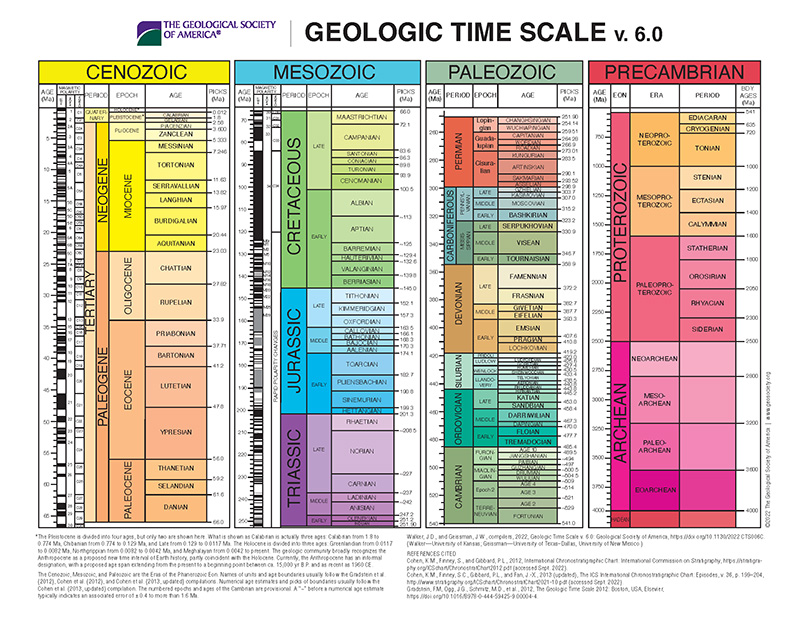

The geological timeline divides Earth's history into large eons, smaller eras, periods, epochs, and ages. This system helps us understand Earth's development, from its formation to the present day.
Eons: Major Divisions of Time
Hadean Eon (4.6 to 4 billion years ago): Earth forms, and the planet is molten and bombarded by meteors.
Archean Eon (4 billion to 2.5 billion years ago): Life begins with simple, single-celled organisms.
Proterozoic Eon (2.5 billion to 541 million years ago): Oxygen builds in the atmosphere, and multicellular life evolves.
Phanerozoic Eon (541 million years ago to present): The era of complex life, marked by major evolutionary events, including the rise of dinosaurs.

Geological Eras
Precambrian Era – Formation of Earth, origin of life, first multicellular organisms.
Paleozoic Era – Explosion of marine life, first land plants and animals, mass extinction.
Mesozoic Era – Age of dinosaurs, first birds and mammals, asteroid impact extinction.
Cenozoic Era – Rise of mammals, evolution of humans, current geological period.
Epochs
Paleocene (66–56 million years ago) – Recovery from the mass extinction, rise of mammals.
Eocene (56–34 million years ago) – Warm climate, early primates, first modern mammals.
Oligocene (34–23 million years ago) – Cooling climate, expansion of grasslands, large mammals evolve.
Miocene (23–5.3 million years ago) – Diversification of mammals and birds, early hominins appear.
Pliocene (5.3–2.6 million years ago) – Further cooling, first bipedal hominins, modern ecosystems form.
Pleistocene (2.6 million–11,700 years ago) – Ice ages, evolution of Homo sapiens, extinction of megafauna.
Holocene (11,700 years ago–present) – Stable climate, rise of human civilizations, current epoch.
The Smallest Divison, Ages
Gelasian Age (2.6–1.8 million years ago) – Beginning of the Pleistocene Ice Ages, first early human migrations.
Calabrian Age (1.8–0.78 million years ago) – Expansion of glaciation, evolution of Homo erectus.
Ionian Age (0.78–0.13 million years ago) – Advances in human tool use, Neanderthals thrive.
Tarantian Age (130,000–11,700 years ago) – End of the Ice Age, extinction of large mammals.
Greenlandian Age (11,700–8,200 years ago) – Start of the Holocene, warming climate, rise of agriculture.
Northgrippian Age (8,200–4,200 years ago) – Stable climate, early civilizations emerge.
Meghalayan Age (4,200 years ago–present) – Marked by global droughts, growth of modern societies.